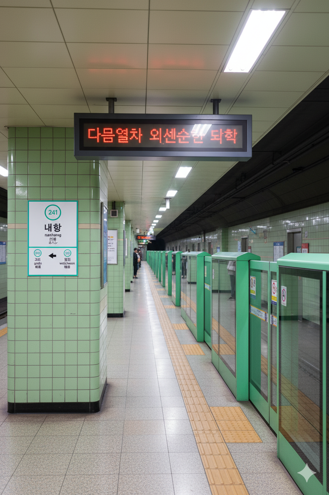

내항역
1. 개요
효빈 도시철도 2호선 241번 및 7호선 713번. 효빈광역시 중구 내항동 122 지하 소재.
2. 역 정보
효빈내항(구 효빈항) 근처에 있는 역으로, 내항 관광단지와 저층 주거단지 정도만 주변에 위치한다. 내항동 자체가 중구 변두리 지역이라 효빈항이 1980년대 남구 쪽으로 이전한 이후에는 많이 공동화되어버린 상황이다.
7호선 내항역은 1932년 개업하여 매우 오랜 역사를 자랑하는 노면전차(트램) 정거장이며, 2호선은 지하로 통과한다.
3. 역 주변 정보
3.1. 출구 정보
|
2
7
|
||
|---|---|---|
| 번호 | 주요 시설 및 방향 | 비고 |
| 1 | 7호선 내항역, 내항동행정복지센터, 내항시장 | |
| 2 | 내항초등학교 | |
| 3 | 효빈내항 | |
| 4 | 내항중학교 | |
4. 일평균 이용객
| 내항역 이용객 통계 | ||||
|---|---|---|---|---|
| 연도 | 2 | 7 | 총합 | 비고 |
| 2020년 | 7,062명 | 1,913명 | 8,975명 | |
| 2021년 | 7,207명 | 1,953명 | 9,160명 | |
| 2022년 | 8,190명 | 2,220명 | 10,410명 | |
| 2023년 | 8,273명 | 2,243명 | 10,516명 | |
| 2024년 | 8,192명 | 2,221명 | 10,413명 | |
효빈에서 환승역 중 가장 이용객이 적은 역으로, 비환승역 1위인 고송역과는 4배 정도 차이가 난다. 바로 옆에 월천역에서는 1호선과 2호선 어간지선, 본선, 7호선을 모두 환승할 수 있고, 내항동 자체도 인구가 적은 데다 이것도 관광 수요 덕분에 유지하는 부분이라 사실 이 정도로 감지덕지라고 한다.
5. 승강장
5.1. 2호선 승강장

2호선 승강장 전경
| 고도 ↑ | |||
| 하 | │ | │ | 상 |
| ↓ 월천 | |||
| 상 | 2 효빈 도시철도 2호선 | 중앙로·북효빈역·입희·중수 방면 |
| 하 | 2 효빈 도시철도 2호선 | 월천 · 효빈공단 · 우전 방면 |
5.2. 7호선 승강장

7호선 승강장 전경
| 명일 ↑ | |||
| 하 | │ | │ | 상 |
| ↓ 내항시장 | |||
| 상 | 7 효빈 도시철도 7호선 | 어간중앙 방면 |
| 하 | 7 효빈 도시철도 7호선 | 중보로 · 효빈대입구 방면 |
6. 연계 교통
6.1. 버스
주요 정류장 위치
- 내항역 3번 출구 (01-011): 3번 출구 앞
- 내항역 4번 출구 (01-012): 4번 출구 앞
| 정류소명 | 노선 종류 | 노선 번호 |
|---|---|---|
| 내항역 3번출구 (01-011) | 급행 | 01 |
| 간선 | 11, 17, 141, 151, 154, 173 | |
| 마을 | 내항01 | |
| 내항역 4번출구 (01-012) | 급행 | 01-1 |
| 간선 | 11-1, 71, 411, 511, 514, 713 | |
| 마을 | 내항01-1 |
7. 기타
- 시장통을 누비는 트램의 낭만 (feat. 애니메이션 감성): 내항역은 중구의 오래된 도심인 내항동에 위치한다.
- 효빈의 에노덴: 이곳의 7호선 승강장은 '내항시장' 한복판을 가로지르는 도로 위에 있다. 낡은 상가와 시장 좌판 사이를 최신식 트램이 아슬아슬하게 스쳐 지나가는 풍경이 마치 일본 가마쿠라의 '에노덴(Enoden)'이나 애니메이션 속 한 장면을 연상케 한다.
- 성지순례의 포토존: 특정 애니메이션 캐릭터의 이름과 겹치지는 않지만, 이 특유의 '레트로 감성' 때문에 수많은 서브컬처 팬들이 트램 사진을 찍으러 오는 필수 출사지가 되었다. 시장 상인들도 이를 반겨 7호선 트램 그림이 그려진 간식을 팔기도 한다.
- 지하 요새로 가는 입구: 지상의 낭만적인 풍경과 달리, 2호선으로 갈아타기 위해서는 좁고 깊은 지하 통로를 내려가야 한다. 1990년대에 지어진 2호선 역사는 타일 마감이 독특하여, 팬들 사이에서는 "이세계로 통하는 던전 입구"라고 불린다. 지상의 활기찬 시장 분위기와 지하의 차분한 분위기가 극명한 대비를 이룬다.